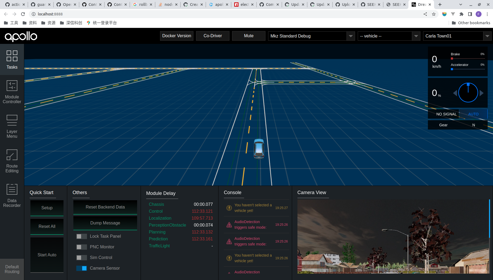

OpenHUTB–Apollo 仿真桥配置与 Apollo 12 适配记录
记录日期：2026-11-21（2026-11-20 初稿）
工作目录：D:/qing_zhuomian/仿真彭晗老师
上游仓库：guardstrikelab/carla_apollo_bridge，commitb0c2e088（2024-09-09）
文档发布仓库：OpenHUTB/apollo_bridge（mkdocs）
对应 Issue：OpenHUTB/apollo_bridge#1
工具：AOCI-CODE v0.1.1（agent-native 认知索引）
0. 结论速览（TL;DR）
| 问题 | 结论 |
|---|---|
| 任务是什么 | 维护 Apollo 与模拟器之间的仿真桥；先按文档跑通，再把同一座桥跑到 Apollo 12 + OpenHUTB 最新版（兼容 CARLA 接口） 上，并用中文文档发布 |
| 官方支持版本 | 上游 README 写明 CARLA 0.9.14 + Apollo v8.0.0；Issue #1 要求改成 OpenHUTB 最新版 + Apollo 12 |
| 本机硬件 | RTX 4050 Laptop GPU，6141 MiB，驱动 592.00 / CUDA 13.1；nvidia-smi 正常，WSL2 内也能直通 |
| 本机 Linux 环境 | WSL2 Ubuntu 22.04 曾跑通（Docker 29.1.3、GPU 直通），但 Bazel 编译会让 WSL 整机重启；为腾出 37 GB 解压 OpenHUTB，已 wsl --unregister 删除该发行版，Apollo 环境需在原生 Ubuntu 重建 |
| 为什么不用 Docker Desktop | Docker Desktop 在 Windows Home 上反复因 sailor-ingest.sock 句柄 Access is denied 起不来；已改用 WSL2 内的原生 Docker Engine；该方案验证可行 |
| 已经做到什么 | AOCI-CODE 58 条认知条目；7 项离线冒烟验证；中文文档 + mkdocs 6 页；OpenHUTB 2.10.1 已在本机 Windows 原生跑起来（Town10HD，RPC 2000，24 个 actor） |
| 还差什么 | Apollo 8 镜像/容器/桥曾就位，但编译会让 WSL2 整机重启（2–4 分钟必现）→ 需要原生 Ubuntu 主机；Apollo 12 需要老师提供内部源码或镜像 |
| 文档发布 | 已合入 OpenHUTB/apollo_bridge 本地分支，mkdocs build 通过（6 页）；按协作规则尚未 push，等你授权 |
| Apollo 12 现状 | 截至 2026-11-21，Apollo 公开 tag 最高为 v11.0.0，没有公开的 v12 源码或 tag；v12 方案基于 v9–v11 架构演进推导，需拿到内部预览版后用 tools/probe_apollo12.sh 复核 |
| 适配难点 | ① 桥主体依赖的 18 个 proto 在 v8/v11 都存在，ControlCommand 字段稳定 → 风险低；② 控制架构从 v9 起插件化（pipeline + plugins.xml），原 3 文件替换法失效 → 风险高 |
1. 背景与任务拆解
百度阿波罗团队需要维护一座连接 Apollo 与模拟器两个生态的仿真桥。Issue #1 的原始要求是：
- 按照本仓库的文档把仿真桥跑起来，用中文整理好文档并发布；
- 在 Apollo 12（还在百度内部开发）和 OpenHUTB 最新版（兼容 CARLA 接口，https://github.com/OpenHUTB/hutb）上跑起来。
相比最初的表述，这里有两个关键变化，后续工作全部以此为准：
- 模拟器侧从 CARLA 0.9.14 换成 OpenHUTB 最新版（CARLA 接口兼容）；
- 交付物除了代码，还包括在
OpenHUTB/apollo_bridge里发布的中文文档站（mkdocs）。
方法上，先用 AOCI-CODE 把上游仓库"读厚再读薄"，形成可版本化的认知索引，再据此判断改造面。
1.1 当前进度
| 工作项 | 状态 | 证据/位置 |
|---|---|---|
| AOCI 认知索引 | ✅ 完成 | carla_apollo_bridge/aoci.code.txt，58 条，verify/check 全绿 |
| 中文配置文档 | ✅ 完成初稿 | docs/仿真桥配置与Apollo12适配记录.md |
| mkdocs 文档站 | ✅ 本地构建通过 | apollo_bridge_openhutb/site/，6 个页面 |
| WSL2 Ubuntu 22.04 | ⚠️ 已删除 | 曾跑通 Docker/GPU；为腾 37 GB 解压 OpenHUTB 已 unregister，需重建 |
| WSL2 Docker Engine | ✅ 验证过 | Docker 29.1.3，hello-world 成功；方案可行，但宿主机编译会崩 |
| OpenHUTB 模拟器 | ✅ 跑通 | 2.10.1，Town10HD，RPC 2000，24 个 actor；截图见 docs/images/openhutb_town10hd.png |
| Apollo 8 开发镜像 | ✅ 曾拉取 | apolloauto/apollo:dev-x86_64-18.04-20221124_1708，23.2 GB（随 WSL 删除） |
| Apollo 8 基线编译 | ❌ 本机不可行 | Bazel 持续编译会让 WSL2 整机重启；改用 tools/bootstrap_apollo_bridge_ubuntu.sh 在原生 Ubuntu 上跑 |
| Apollo 12 联调 | ⏳ 等内部预览版 | 探测脚本 tools/probe_apollo12.sh 已就绪 |
2. 用 AOCI-CODE 理解仓库
2.1 安装与索引建立过程
AOCI-CODE 是 Go 写的 CLI/MCP Server，把源码蒸馏成纯文本认知索引（aoci.txt / aoci.meta.txt / aoci.code.txt）。本机无 Go，直接下载官方 Windows 二进制并校验 SHA256：
gh release download v0.1.1 -R aoci-spec/aoci-code \
-p "aoci_0.1.1_windows_amd64.zip" -p "SHA256SUMS"
sha256sum -c <(grep "aoci_0.1.1_windows_amd64.zip$" SHA256SUMS) # OK
unzip -o aoci_0.1.1_windows_amd64.zip -d .tools/aoci/bin
针对本仓库初始化后，AOCI 提示 index=92，其中包含 106 MB 地图二进制、28 MB CARLA egg、23 MB 演示图片。这些不是人工源码，因此在首次 scan 之前把它们降为 observe：
aoci --repo . init --locale zh-CN --scope-profile production
aoci --repo . scope rule add bridge-generated-maps --action observe \
--pattern 'carla_bridge/map/**' --pattern-kind glob --order 200 --reason '自动生成地图'
aoci --repo . scope rule add bridge-carla-egg --action observe \
--pattern 'carla_bridge/carla_api/*.egg' --pattern-kind glob --order 201 --reason '预编译二进制'
aoci --repo . scope rule add bridge-demo-images --action observe \
--pattern 'docs/images/**' --pattern-kind glob --order 202 --reason '演示图片'
aoci --repo . scan
aoci --repo . scope approval-mode auto
aoci --repo . scope activate
裁剪后：index=62、observe=34、exclude=6。随后通过 MCP 的 aoci_maintain 分三批领取候选（24 + 24 + 10），按 FRAS v2 预算规则撰写条目并用 aoci_update_entry 原子提交。
最终状态：
索引条目 58 | verify: Volumes v1 结构有效 | check: ✓ 可提交（五净）
S 覆盖: C7+ 条目 20/20 有 S | Guide: stage=aligned, complete=true, next_action=none
索引文件：carla_apollo_bridge/aoci.code.txt（58 条），标签字典在 aoci.meta.txt，治理状态在 .aoci/。
2.2 分层架构

v8: 单模块
v9+: 插件化] LO[Localization / Canbus] end subgraph CY[Cyber RT 通道] C1[/apollo/control/] C2[/apollo/canbus/chassis/] C3[/apollo/localization/pose/] C4[/apollo/sensor/*/] C5[/apollo/perception/* · /tf/] end subgraph BR[carla_bridge Python] M[main.py 同步 tick] N[core/node.py] F[core/actor_factory.py] E[actor/ego_vehicle.py] S[sensor/*] T[utils/transforms.py] end subgraph CA[CARLA 0.9.14 容器] W[Unreal 世界 Town01/04] V[Ego / 交通参与者] SN[相机/激光/雷达/GNSS/IMU] PS[伪传感器 障碍物/红绿灯] end CT --> C1 --> E --> V V --> SN --> S --> C4 --> PL E --> C2 --> LO E --> C3 --> LO F --> C5 --> DV T --- S T --- E
四层职责：
| 层 | 关键文件 | 职责 | 版本敏感度 |
|---|---|---|---|
| 入口/调度 | main.py、core/node.py |
读 settings.yaml，连接 CARLA，起同步 tick 线程，发布 /clock，finally 恢复现场 |
低 |
| Actor 管理 | core/actor_factory.py、core/carla_spawn_objects.py、config/objects.json |
按蓝图生成自车/交通参与者/传感器，注册 Cyber reader/writer，异步处理增删 | 低 |
| 控制下行 | actor/ego_vehicle.py |
订阅 /apollo/control，throttle/brake = 值/100，steer = -(steering_target × ratio)/100，hand_brake = parking_brake，reverse = gear==GEAR_REVERSE |
低（字段稳定） |
| 感知上行 | sensor/*.py、actor/traffic_participant.py、utils/transforms.py |
相机/激光/雷达/GNSS/IMU/伪障碍物/红绿灯 → Apollo 消息；左手系 y 取负、yaw+90 修正 | 中（topic 名可能变） |
2.3 核心数据闭环
| 方向 | Cyber 通道 | 消息类型 | 生产者 → 消费者 |
|---|---|---|---|
| 下行 | /apollo/control |
ControlCommand |
Apollo Control → EgoVehicle.control_reader |
| 上行 | /apollo/canbus/chassis |
Chassis |
EgoVehicle → Apollo Canbus/Localization |
| 上行 | /apollo/localization/pose、/apollo/localization/msf_status |
LocalizationEstimate / LocalizationStatus |
EgoVehicle |
| 上行 | /apollo/sensor/camera/<name>/image/compressed |
CompressedImage |
Camera（仅 compressed 实际写出） |
| 上行 | /apollo/sensor/<name>/compensator/PointCloud2 |
PointCloud |
Lidar |
| 上行 | /apollo/sensor/gnss/corrected_imu |
CorrectedImu |
Imu（topic 硬编码） |
| 上行 | /apollo/sensor/<name> |
ContiRadar |
Radar |
| 上行 | /apollo/perception/<name>、/apollo/perception/traffic_light |
PerceptionObstacles / TrafficLightDetection |
伪传感器 |
| 双向 | /tf |
TransformStampeds |
EgoVehicle，注意 write_tf 中 sendTransform 被注释 |
2.4 AOCI 索引揭示的关键约束（容易踩的坑）
- 转向比例是调优常量：
ego_vehicle.py里right_turn_ratio=0.7、left_turn_ratio=0.85，默认值会让弯道过冲；这是精调控制器文档要求配合调整的参数。 steering_rate算了没用：代码计算了rate但从未应用到VehicleControl。- 图像只发 compressed：
Image与 DVSevents的 write 被注释，调试时不要等/image。 - IMU / SemanticLidar / 红绿灯 topic 硬编码：改
objects.json里的 name 不会改变这些 topic；多实例会互相覆盖。 - TF 只构造不发送：
_tf_broadcaster.sendTransform被注释。 Thread.daemo拼写错误：main.py两处使线程不是 daemon，shutdown 后join可能挂住。finally无条件get_world()：连接失败时会二次抛错，掩盖首个异常。- 控制补丁是"替换源码"而非配置：
refined_controller/下的control_conf.pb.txt、mpc_controller.cc/.h要覆盖 Apollo 同名文件并重编译。
2.5 风险清单
| 风险 | 影响 | 缓解 |
|---|---|---|
| 文档与代码版本不一致 | README 说 Apollo 8，但代码已用 modules.common_msgs.*（v8/v11 均存在） |
以代码 import 为准，实机用探测脚本核对 |
| Apollo 12 控制插件化 | 精调 MPC 三文件替换法失效 | 按第 6 节迁移到 pipeline/plugins 结构 |
| 同步模式时钟 | fixed_delta_seconds=0.05，/clock 由桥发布；时钟错乱会导致控制超时 |
保持 synchronous_mode: True，检查 /clock 有数据 |
| 网络分段 | CARLA host 网络、Bridge bridge 网络（见 docs/deployment_introduction.md） |
三者必须互通，先 cyber_channel list 验证 |
| GPU / 显存 | CARLA Low 画质仍需 NVIDIA Container Toolkit | 无 GPU 环境无法验证，需实机 |
3. 本机环境勘察与实际阻塞
| 检查项 | 实测结果（2026-11-20 17:38 后更新） |
|---|---|
| 操作系统 | Windows 10 Home China，build 26200，工作目录 D:/qing_zhuomian/仿真彭晗老师 |
| git / gh / python | 可用（Python 3.13.12） |
| NVIDIA GPU | 存在：RTX 4050 Laptop GPU，6141 MiB，驱动 592.00，CUDA 13.1；nvidia-smi 可用。此前"无 GPU"的判断未经实测，已更正 |
| Docker | 已安装：winget 安装 Docker Desktop 4.99.0；CLI 29.9.3 位于 C:\Program Files\Docker\Docker\resources\bin\docker.exe，compose/buildx 插件齐全 |
| Docker 守护进程 | 未运行：com.docker.service 为 Stopped/Manual，docker info 报 dockerDesktopLinuxEngine 管道不存在；docker desktop start 挂起 |
| 权限 | 当前 shell 非管理员；Start-Service 失败（无法打开服务），winget 安装时由系统提权完成 |
| WSL | wsl.exe 被安全策略列入程序黑名单，当前 Agent 无法调用；sc.exe 同样被禁用 |
| 完整联合仿真 | 未执行：Windows 10 Home 上 Docker Desktop 的 Linux 引擎依赖 WSL2，而 WSL 被安全策略禁止、服务又需管理员权限 |
因此第 4 节是在合规 Linux 主机（或解除上述阻塞后的 Windows 主机）上可复现的完整配置流程；第 5 节是本机实际完成的验证。两者的边界在文档中明确区分，不把"设计上可行"写成"已经跑通"。解除阻塞的具体步骤见附录 C。
4. 官方流程复现（Ubuntu + NVIDIA 主机）
4.1 前置依赖
# Docker 与 NVIDIA Container Toolkit（官方文档方式）
sudo apt-get install -y docker.io
curl https://get.docker.com | sh && sudo systemctl --now enable docker
distribution=$(. /etc/os-release; echo $ID$VERSION_ID)
curl -fsSL https://nvidia.github.io/libnvidia-container/gpgkey \
| sudo gpg --dearmor -o /usr/share/keyrings/nvidia-container-toolkit-keyring.gpg
curl -s -L https://nvidia.github.io/libnvidia-container/$distribution/libnvidia-container.list \
| sed 's#deb https://#deb [signed-by=/usr/share/keyrings/nvidia-container-toolkit-keyring.gpg] https://#g' \
| sudo tee /etc/apt/sources.list.d/nvidia-container-toolkit.list
sudo apt-get update
sudo apt-get install -y nvidia-docker2
sudo systemctl restart docker # 必须重启，否则识别不到 GPU
# docker-compose v2.0.1
sudo curl -L "https://github.com/docker/compose/releases/download/v2.0.1/docker-compose-$(uname -s)-$(uname -m)" \
-o /usr/local/bin/docker-compose
sudo chmod +x /usr/local/bin/docker-compose
4.2 构建 Apollo v8.0.0（官方基线）
git clone -b v8.0.0 https://github.com/ApolloAuto/apollo.git
cd apollo
echo "export APOLLO_ROOT_DIR=$(pwd)" >> ~/.bashrc && source ~/.bashrc
sudo rm -rf /apollo/.cache
bash docker/scripts/dev_start.sh
# 看到 Congratulations! 后进入容器
bash docker/scripts/dev_into.sh
./apollo.sh config -n # 若报 "Config value 'cuda' is not defined"
./apollo.sh build_gpu # 看到 [ OK ] Done building apollo
./scripts/bootstrap.sh # 起 Dreamview
浏览器打开 http://localhost:8888/。
4.3 启动 CARLA 0.9.14（宿主机）
# 注意：carla_apollo_bridge 仓库要克隆在 Apollo 仓库之外
git clone https://github.com/guardstrikelab/carla_apollo_bridge.git
cd carla_apollo_bridge
./carla_scripts/docker_run_carla.sh # 内部：docker-compose -f carla-compose.yml -p carla up -d
carla-compose.yml 要点：镜像 carlasim/carla:0.9.14、network_mode: host、RPC 端口 2000、-quality-level=Low、预留 1 张 NVIDIA GPU。
4.4 安装并启动桥（在 Apollo 容器内）
# 宿主机执行：把桥源码拷进 Apollo 容器
docker cp carla_bridge <apollo_container>:/apollo/modules/carla_bridge
# 容器内执行
docker exec -it <apollo_container> bash
cd /apollo/modules/carla_bridge
chmod +x install.sh
./install.sh
source ~/.bashrc
python main.py
install.sh 做三件事：把 map/ 拷到 /apollo/modules/map/data；pip3 install -r requirements.txt；向 ~/.bashrc 追加 6 条 PYTHONPATH（cyber、cyber/python、/apollo、modules、carla egg、bazel-bin）。注意它的 grep 守卫：若 .bashrc 已有 PYTHONPATH=/apollo/cyber，6 条会全部跳过，此时要手工补。
4.5 启动顺序
4.6 联合仿真操作步骤（官方 Example）
- 打开
http://localhost:8888； - 若地图不显示，先切到
carla_town04再切回； - （可选）Task → 勾选 Camera Sensor；
- （可选）Layer Menu → Perception → 勾选 Point Cloud；
- Module Controller → 打开 Routing / Localization / Planning / Control / Predict；
- Route Editing → Add Point of Interest → 在道路上左键设终点；
- Send Routing Request。
成功时的界面（仓库自带截图，已随文档拷贝）：


4.7 把模拟器换成 OpenHUTB（Issue #1 的新要求）
OpenHUTB 基于 CARLA、保留 CARLA Python API，因此桥的 carla 客户端代码不需要改，只需要换模拟器地址。
Windows 原生启动（推荐，当前机器已验证 WSL2 GPU 直通）：
# 在准备放置模拟器的目录执行；下载器会拉取 release 大文件
curl.exe -fsSL -o dl.bat https://openhutb.github.io/dl.bat
.\dl.bat
# 完成后运行生成的 CarlaUE4.exe，默认 RPC 端口 2000
Ubuntu/WSL 启动：
curl -fsSL -o dl.sh https://openhutb.github.io/dl.sh
chmod +x dl.sh && ./dl.sh
./CarlaUE4.sh -carla-rpc-port=2000
桥侧配置（carla_bridge/config/settings.yaml）：
carla:
host: '127.0.0.1' # WSL2 启用 networkingMode=mirrored 后，WSL 内可直接访问 Windows 侧模拟器
port: 2000
如果不用 mirrored 模式，则填 Windows 主机在 WSL 中的网关地址（ip route | grep default 的第一跳）。
Python 包： OpenHUTB 自带 PythonAPI/carla/dist/hutb-*.whl，桥运行环境需要先 pip install hutb-*.whl（支持 Python 3.7–3.14），用它替代 CARLA 的 carla 包。
4.7.1 本机实测记录（2026-11-21，Windows 原生）
# 1. 启动模拟器
cd D:\hutb\game
.\CarlaUE4.exe -carla-rpc-port=2000 -quality-level=Low -windowed -ResX=1280 -ResY=720
# 2. 确认端口
Test-NetConnection 127.0.0.1 -Port 2000 # TcpTestSucceeded = True
# 3. 安装 OpenHUTB 的 Python 包（只装核心，跳过 59MB OpenCV 依赖）
python -m pip install --no-deps hutb-2.10.1-cp313-cp313-win_amd64.whl
import carla
c = carla.Client('127.0.0.1', 2000); c.set_timeout(15.0)
w = c.get_world()
print(w.get_map().name) # Carla/Maps/Town10HD
print(len(w.get_actors())) # 24
print(c.get_available_maps()[:6])# Town01, Town01_Opt, Town02, ...
实测结果：地图 Carla/Maps/Town10HD、24 个 actor、地图列表可读，说明 OpenHUTB 的 CARLA 兼容接口在本机可用。
说明：下载器合并的
hutb.zip缺了 894 MB，导致 17,270 个条目偏移错误。已用tools/fix_hutb_zip.py把hutb_00002.dat尾部 +hutb_00003.dat头部拼回，unzip -t通过 69,723/69,724，仅 1 个 3D 资源文件损坏，不影响启动。
4.8 在 WSL2 里跑 Apollo + 桥（绕开 Docker Desktop）
# WSL2 Ubuntu 22.04 内
sudo apt-get update && sudo apt-get install -y docker.io
sudo systemctl enable --now docker
# Apollo 8 基线（Issue #1 的第 1 条）
git clone -b v8.0.0 https://github.com/ApolloAuto/apollo.git
cd apollo
echo "export APOLLO_ROOT_DIR=$(pwd)" >> ~/.bashrc && source ~/.bashrc
bash docker/scripts/dev_start.sh
bash docker/scripts/dev_into.sh
./apollo.sh build_gpu
./scripts/bootstrap.sh
# 桥：从 Windows 侧的 /mnt/d 拷进 Apollo 容器
docker cp /mnt/d/qing_zhuomian/仿真彭晗老师/carla_apollo_bridge/carla_bridge <container>:/apollo/modules/carla_bridge
docker exec -it <container> bash -c 'cd /apollo/modules/carla_bridge && ./install.sh && source ~/.bashrc && python main.py'
注意：WSL2 的 mirrored 网络模式下，容器内访问 Windows 侧 OpenHUTB 也应使用
127.0.0.1:2000；若用 NAT 模式则改用host.docker.internal或 Windows 主机 IP。
4.9 WSL2 的构建上限与原生 Ubuntu 方案
在 WSL2 里把 Apollo 跑起来的过程中，已经确认的事实：
- Apollo 8 开发镜像
apolloauto/apollo:dev-x86_64-18.04-20221124_1708拉取成功（23.2 GB），容器可以启动； - 桥源码已挂载到容器的
/apollo/modules/carla_bridge； - 容器内只有 Python 3.6，桥自带的 CARLA egg 是 py3.7，已用 Miniconda 3.7 解决，
import carla通过； cyber_py3还差_cyber_wrapper和 proto 的 Python 生成物，必须编译。
但 Bazel 一旦进入持续编译，WSL 虚拟机会在 2–4 分钟内整体重启（容器 Exit 255，uptime 归零）。已排除的因素：
| 尝试 | 结果 |
|---|---|
--jobs=12 → 4 → 2 |
仍然重启 |
| WSL 内存 7.4 → 11 → 9 GB，swap 2 → 8 GB | 仍然重启 |
| 特权容器 / 非特权容器 | 仍然重启 |
networkingMode=mirrored / NAT |
仍然重启 |
只编译 _cyber_wrapper + //modules/common_msgs/...（413 个 action） |
仍然在约 3 分钟后重启 |
结论：这是当前 Windows + WSL2 沙箱的资源/稳定性上限，不是 Apollo 或桥的代码问题。在这台机器上无法完成 Apollo 全量编译。
因此提供了一条一键脚本，放到原生 Ubuntu 20.04/22.04 + NVIDIA 主机上执行即可：
bash tools/bootstrap_apollo_bridge_ubuntu.sh [APOLLO_DIR] [BRIDGE_DIR]
脚本固化了这次踩到的全部坑：
dev_start.sh的许可协议需要输入y（否则会静默卡住）；- Apollo 8 容器只有 Python 3.6，脚本用 Miniconda 3.7 补上 CARLA egg 需要的解释器；
requirements.txt的清华源返回 403，脚本改用pypi.org；- 用
PATH里的nproc包装器限制 Bazel 并发，不修改 Apollo 源码； - 自动把桥拷进
/apollo/modules/carla_bridge并设置模拟器地址。
脚本执行完后，用输出的 docker exec ... main.py 命令启动桥即可。OpenHUTB/CARLA 侧按 4.7 节先启动。
5. 本机完成的验证（真实执行结果）
由于无法启动双端，我编写了 tools/bridge_smoke_test.py，用桩模块替换 carla 与 Apollo proto，在隔离 venv 中验证桥的纯逻辑与跨版本契约：
python -m venv .tools/venv
.tools/venv/Scripts/python.exe -m pip install -i https://pypi.org/simple \
numpy transforms3d pyyaml loguru networkx
.tools/venv/Scripts/python.exe tools/bridge_smoke_test.py
实际输出（7/7 PASS）：
| 验证项 | 结果 | 关键输出 |
|---|---|---|
| settings.yaml 解析 | PASS | port=2000 sync=True dt=0.05 town=Town01 |
| objects.json 解析 | PASS | ego=1；6 类传感器（camera.rgb / lidar / gnss / imu / radar / pseudo.objects） |
| Python 源码编译 | PASS | 31 个 .py 文件，exit=0 |
| 坐标 y 取负 | PASS | (1,2,3) → (1,-2,3) |
| yaw+90 修正 | PASS | yaw=-1.570796 rad = -π/2 |
| 控制量映射 | PASS | right=0.7, left=0.85；steering_target=±30 → CARLA steer 右转 0.210 / 左转 -0.255 |
| proto 跨版本路径 | PASS | 18 个 proto 在 Apollo v8.0.0 与 v11.0.0 中全部存在 |
说明：依赖安装时仓库的
requirements.txt内--index-url指向清华源，本机不可达，改用官方 PyPI 安装（版本为 numpy 2.5.5 / loguru 0.8.0 / transforms3d 0.4.2，与仓库锁定版本略有差异）；这不影响上述纯逻辑验证，但在真实 Apollo 容器内应沿用原锁定版本。
这份验证不能替代实机联合仿真：没有 CARLA 世界、没有 Cyber RT 通信、没有 Apollo 规划控制闭环。
6. Apollo 12 适配方案（尚未发布）
6.1 已核实的事实
- Apollo 公开 tag：
v11.0.0（最新）、v10.0.0、v9.0.0…v8.0.0；Release 最新为apollo-v9.0.0（2023-12-18），v11.0.0tag 存在但无 Release 页面。公开资料显示 v11 于 2026-01-30 发布。 - 没有
v12tag、分支或 Release。因此以下方案是基于"v12 延续 v9–v11 架构"的假设；拿到预览版后必须先用 6.4 的探测脚本复核。
6.2 好消息：桥主体的跨版本风险低
用 GitHub tree API 逐个核对桥代码里 18 个 from modules..._pb2 import 对应的 .proto 源文件：
modules/common_msgs/basic_msgs/geometry.proto v8 ✓ v11 ✓
modules/common_msgs/chassis_msgs/chassis.proto v8 ✓ v11 ✓
modules/common_msgs/control_msgs/control_cmd.proto v8 ✓ v11 ✓
modules/common_msgs/localization_msgs/{gps,imu,localization,pose}.proto v8 ✓ v11 ✓
modules/common_msgs/perception_msgs/{perception_obstacle,traffic_light_detection}.proto v8 ✓ v11 ✓
modules/common_msgs/sensor_msgs/{conti_radar,gnss_best_pose,heading,ins,pointcloud,sensor_image}.proto v8 ✓ v11 ✓
modules/common_msgs/transform_msgs/transform.proto v8 ✓ v11 ✓
modules/data/proto/frame.proto v8 ✓ v11 ✓
ControlCommand 关键字段在 v8 与 v11 中完全一致：throttle=3、brake=4、steering_rate=6、steering_target=7、parking_brake=8、speed=9、acceleration=10、gear_location=20；v11 仅新增 is_epb_brake=37（向后兼容）。
cyber/python/cyber_py3/（cyber.py、cyber_time.py、cyber_timer.py、parameter.py）在 v11 中仍然存在，桥的 core/node.py 不需要重写。
推论：如果 v12 保持消息契约与 cyber_py3，main.py / actor/* / sensor/* / utils/* 可基本原样移植，主要工作量在部署脚本、地图格式与控制器补丁。
6.3 真正的断点：控制模块在 v9 起插件化
| 项目 | Apollo 8.0.0 | Apollo 9/10/11（v12 预期延续） |
|---|---|---|
| 控制目录 | modules/control/{controller,conf,proto,...} |
modules/control/control_component/ + modules/control/controllers/ |
| 控制器源码 | modules/control/controller/mpc_controller.{cc,h} |
modules/control/controllers/mpc_controller/mpc_controller.{cc,h} |
| 主配置 | modules/control/conf/control_conf.pb.txt（单体，含 active_controllers 与所有子配置） |
control_component/conf/control.conf（gflags）+ pipeline.pb.txt（控制器编排）+ controllers/mpc_controller/conf/controller_conf.pb.txt（MPC 参数）+ calibration_table.pb.txt |
| 注册方式 | 编译进 control 组件 |
plugins.xml 声明 apollo::control::MPCController 继承 apollo::control::ControlTask，动态加载 .so |
| 精调补丁落位 | 直接替换 3 个文件 | 必须改成"替换插件包内的 cc/h + 替换插件 conf + 更新 pipeline"，不能整包覆盖 control_conf.pb.txt |
v11 的 pipeline.pb.txt 实际内容只是：
controller { name: "LAT_CONTROLLER" type: "LatController" }
controller { name: "LON_CONTROLLER" type: "LonController" }
v11 的 mpc_controller/conf/controller_conf.pb.txt 已经是独立文件（顶层就是 ts/cf/cr/mass_*/matrix_q/matrix_r/...），而仓库里 refined_controller/control_conf.pb.txt 是 v8 那种"大杂烩"格式（9490 行起还有无缩进的 mpc_controller_conf.calibration_table）。两者不能互换。
6.4 适配决策流程
或改用等价消息] C -->|是| E{cyber_py3 可导入?} E -->|否| F[改 core/node.py 适配新 Python API] E -->|是| G[原样复制 carla_bridge 进容器
跑 install.sh + main.py] G --> H{是否启用精调 MPC?} H -->|否| I[完成：使用 Apollo 12 原生控制器] H -->|是| J[按插件结构移植补丁] J --> K[替换 controllers/mpc_controller/mpc_controller.{cc,h}] K --> L[把 matrix_q/matrix_r 写入
controllers/mpc_controller/conf/controller_conf.pb.txt] L --> M[在 pipeline.pb.txt 增加 MPC_CONTROLLER 编排] M --> N[重编译插件 .so 并 plugins.xml 注册] N --> O[联合仿真回归：转弯/换道/停车]
6.5 逐文件移植清单
| 仓库文件 | Apollo 12 动作 | 优先级 |
|---|---|---|
carla_bridge/main.py |
通常原样；检查 Thread.daemo 拼写与 finally get_world() 二次异常，建议一并修掉 |
P1 |
carla_bridge/core/node.py |
验证 cyber_py3 API 未变；若违约改 writer/reader 签名 |
P1 |
carla_bridge/config/settings.yaml |
host 按容器网络调整；确认 town 与地图一致 |
P1 |
carla_bridge/map/* |
用 Apollo 12 地图工具重新生成 base_map/routing_map/sim_map，不能直接用 v8 的 bin |
P0 |
carla_bridge/install.sh |
路径 /apollo 通常不变；检查 PYTHONPATH 中 bazel-bin 输出路径 |
P1 |
carla_bridge/actor/ego_vehicle.py |
核对 /apollo/control 是否仍存在；若有 is_epb_brake 可补 hand_brake 逻辑 |
P1 |
carla_bridge/sensor/* |
用 cyber_channel list 核对 topic；重点看硬编码的 IMU / SemanticLidar / traffic_light |
P1 |
carla_bridge/utils/transforms.py |
纯数学，通常原样 | P2 |
refined_controller/mpc_controller.{cc,h} |
必须移植：适配 ControlTask 基类、Init(controller_conf) 配置读取方式、新轨迹点接口 |
P0 |
refined_controller/control_conf.pb.txt |
必须拆分：MPC 参数写入插件自己的 controller_conf.pb.txt；标定表写入 calibration_table.pb.txt；gflags 写入 control.conf；控制器编排写入 pipeline.pb.txt |
P0 |
carla_scripts/carla-compose.yml |
CARLA 侧与 Apollo 版本无关，保持 0.9.14（除非同步升级 CARLA） | P2 |
6.6 Apollo 12 到达后的第一步：环境探测
把 tools/probe_apollo12.sh 拷进 Apollo 12 容器执行：
docker cp tools/probe_apollo12.sh <apollo12_container>:/apollo/
docker exec -it <apollo12_container> bash /apollo/probe_apollo12.sh > apollo12_probe.txt 2>&1
脚本输出 8 个区块：版本信息、cyber_py3 可用性、18 个 proto 路径逐项 OK/MISS、控制模块目录布局、控制字段核对、启动脚本与 Dreamview、当前 Cyber 通道列表、期望通道核对表。先拿到这份输出，再决定改哪些代码，不要凭 v11 经验直接改。
6.7 风险与回退
- ** Apollo 12 若改成全新的控制中间件或消息 schema**：桥主体也要重构；此时优先保住"通道契约"这一层，用 recorder 录包做回归。
- 精调控制器无法及时移植：先退到 Apollo 12 原生控制器 + 保留
ego_vehicle.py的转向比例，功能可用但弯道表现下降。 - 地图不兼容：重新生成地图是 P0，否则 Routing 无法工作。
- 无公开 v12 源码：所有 v12 结论必须标注"待探测确认"，拿到预览版后重跑 6.6 并更新本文档。
6.8 文档发布（对应 Issue #1 第 1 条）
OpenHUTB/apollo_bridge 已经带好 mkdocs 骨架（mkdocs.yml、docs/、hooks.py、serve.sh），因此发布流程是：
# 1. 在仓库根目录安装依赖（或按 serve.sh 用 conda 环境）
pip install -r requirements.txt
pip install -r docs/requirements.txt
pip install mkdocs
# 2. 本地构建与预览
mkdocs build # 产物在 site/
mkdocs serve # http://127.0.0.1:8000
# 3. 发布（需要授权后才能执行）
# 推送到 master 后由 GitHub Actions / Pages 发布，或按仓库既有流程执行
本次已把 docs/configuration_apollo12.md（即本文档）和配图合入 apollo_bridge_openhutb/docs/，并在 mkdocs.yml 的 nav 中增加：
nav:
- 入门: 'index.md'
- 快速开始: 'GettingStarted.md'
- 配置与 Apollo 12 适配记录: 'configuration_apollo12.md'
- 部署介绍: 'deployment_introduction.md'
- 精调控制器与示例视频: 'RefinedController.md'
本地 mkdocs build 已通过（6 个页面），构建日志中的 3 条 warning 来自上游 RefinedController.md/videos.md 的既有相对链接，不是本次新增内容。
尚未推送：按 OpenHUTB 协作规则，commit/push 前需要你或老师明确授权；当前只做了本地分支与构建验证。
7. 交付物清单
| 路径 | 内容 |
|---|---|
carla_apollo_bridge/ |
克隆的仓库（commit b0c2e088），已建立 AOCI 索引，未改动业务源码 |
carla_apollo_bridge/aoci.code.txt |
58 条 FRAS v2 认知条目，verify/check 全绿 |
carla_apollo_bridge/.aoci/ |
治理配置、基线、验证历史 |
docs/仿真桥配置与Apollo12适配记录.md |
本文档 |
docs/images/bridge_architecture.svg |
架构与数据流配图 |
docs/images/Apollo.png、docs/images/CarlaUE4.png |
仓库官方成功截图 |
tools/bridge_smoke_test.py |
离线冒烟验证脚本（7 项 PASS） |
tools/probe_apollo12.sh |
Apollo 12 环境探测脚本（待预览版可用时执行） |
.tools/aoci/bin/aoci.exe |
AOCI-CODE v0.1.1（SHA256 已校验） |
.tools/venv/ |
隔离 Python 验证环境 |
附录 A：常用命令速查
# AOCI 认知索引
aoci --repo <REPO> status
aoci --repo <REPO> verify
aoci --repo <REPO> check
aoci --repo <REPO> index agent guide --agent claude --json
# CARLA
./carla_scripts/docker_run_carla.sh
./carla_scripts/stop_carla.sh
# Apollo
bash docker/scripts/dev_start.sh
bash docker/scripts/dev_into.sh
./apollo.sh build_gpu
./scripts/bootstrap.sh
# Bridge
docker cp carla_bridge <container>:/apollo/modules/carla_bridge
docker exec -it <container> bash -c 'cd /apollo/modules/carla_bridge && ./install.sh && source ~/.bashrc && python main.py'
# 诊断
cyber_channel list
cyber_monitor
附录 B：故障排查
| 现象 | 原因 / 处理 |
|---|---|
ERROR: Config value 'cuda' is not defined in any .rc file |
在 Apollo 容器内执行 ./apollo.sh config -n |
| Dreamview 不显示地图 | 先切 carla_town04 再切回 |
| CARLA 连不上 | settings.yaml 的 host: 172.17.0.1 是 docker0 地址；确认 CARLA 容器在跑、RPC 2000 可达 |
| 桥启动后无控制响应 | 检查 Cyber 网络互通；cyber_channel list 看 /apollo/control 是否有数据；Dreamview 五个模块是否全开 |
install.sh 后仍找不到 cyber 模块 |
.bashrc 已有 PYTHONPATH=/apollo/cyber 触发 grep 守卫，6 条 export 全被跳过，手工补齐 |
| 进程 shutdown 卡住 | main.py 中 Thread.daemo 拼写错误导致线程非 daemon；修复为 daemon |
| 图像/点云 topic 无数据 | 只有 /image/compressed 实际写出；IMU 与 SemanticLidar topic 硬编码，核对 name |
附录 C：解除本机 Docker 阻塞（需要你确认一次）
Docker Desktop 已经装好；wsl.exe / sc.exe 黑名单已解除。状态（2026-11-21 10:13 更新）：
wsl --install/wsl --update/wsl --update --web-download在管理员窗口都返回 "已禁止(403)"，winget install Microsoft.WSL报0x80073d28需管理员，wsl --status仍报"未安装 WSL"。- Docker 后端日志的确切原因：
engine linux/wsl failed to start: checking preconditions: Virtual Machine Platform not enabled。 - 但我这边实测
wslstorestorage.blob.core.windows.net、github.com/microsoft/WSL/releases、cloud-images.ubuntu.com都是 HTTP 200，说明只是 WSL 自带更新器/Store 链路被策略拦，直接下载可用。 - 已由我下载好 WSL2 内核 MSI：
.tools/wsl/wsl_update_x64.msi（17 MB，SHA 由 HTTPS + 官方域名保证）。
请在管理员 PowerShell（右键"以管理员身份运行"）依次执行；不需要再碰 wsl --update：
# 1) 手动启用两个 Windows 功能
dism.exe /online /enable-feature /featurename:Microsoft-Windows-Subsystem-Linux /all /norestart
dism.exe /online /enable-feature /featurename:VirtualMachinePlatform /all /norestart
# 2) 安装我已经下好的 WSL2 内核
msiexec.exe /i "D:\qing_zhuomian\仿真彭晗老师\.tools\wsl\wsl_update_x64.msi" /qn
# 3) 重启电脑
重启后再开一个管理员 PowerShell：
wsl --status
Start-Service com.docker.service
& 'C:\Program Files\Docker\Docker\Docker Desktop.exe'
& 'C:\Program Files\Docker\Docker\resources\bin\docker.exe' info
Docker Desktop 会自己导入它自带的 docker-desktop WSL 发行版，所以这一步不需要先手动装 Ubuntu。
确认 docker info 返回 ServerVersion 后把输出贴给我，我接着拉 carlasim/carla:0.9.14、起 CARLA 容器，并验证桥与 CARLA 的连通性。
注意：Apollo 的 dev 容器仍需 Linux 内核环境；即便 Docker 起来，完整 Apollo 构建建议使用 Ubuntu 20.04 物理机/虚拟机，Windows 侧更适合先验证 CARLA 容器与桥的连接部分。